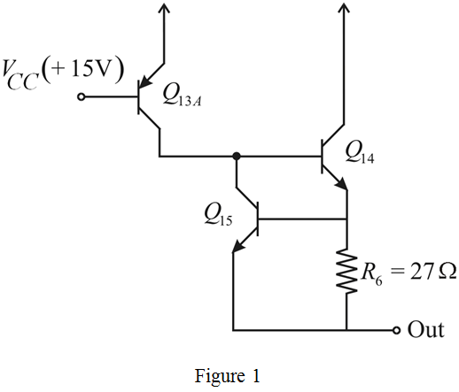
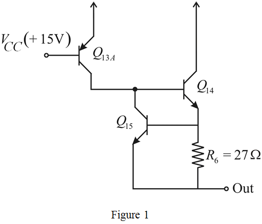

Refer to Figure 12.13 in the textbook for the circuit diagram.
From the Figure 12.13, the positive current-limiting circuit involving, and  in the 741 op-amp circuit is shown in Figure 1.
in the 741 op-amp circuit is shown in Figure 1.

Refer to Figure 12.13 in the textbook for the circuit diagram.
From the Figure 12.13, the positive current-limiting circuit involving, and in the 741 op-amp circuit is shown in Figure 1.

From the Figure 1, the collector current of  by applying the Kirchhoff’s current law at the base node of the transistor
by applying the Kirchhoff’s current law at the base node of the transistor  is,
is,
…… (1)
In the 741 operational amplifier circuits, the device parameters are,
From the Figure 1, the base current of the transistor is,
Substitute 200 for .
Substitute and in the expression (1)
…… (2)
Write the expression for the collector current of transistor, .
Substitute for 
Consider the current flowing thought the resistor  is
is  . Then the base to emitter voltage is,
. Then the base to emitter voltage is,
Substitute for 
Thus the collector current is,
…… (3)
Substitute equation (3) in equation (2).
Take logarithm on both sides.
Neglect the term to make the equation solvable, as the logarithm of unknown quantity cannot be determined. Therefore,
Therefore, the current  through the resistor
through the resistor  is, .
is, .